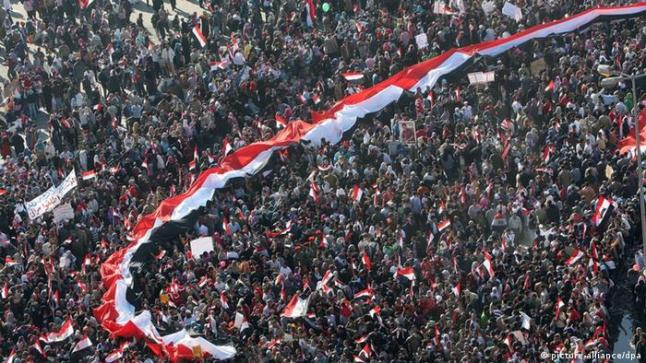

نقطه ساخنه
»
شبح الثورة يرهب الجميع في ذكراها
شبح الثورة يرهب الجميع في ذكراها

من بعد مرور 12 عامًا على الثورة المصرية ، تغيرت نظرة الشعب المصري تجاه ثورته الشعبية الكبيرة ، التي لم تعد القنوات و لا الصحف تتذكرها ؛ فمن بعد أن كانت الثورة صورة واضحة في عيوننا أصبحت الآن ذكرى مشوشة لا يُرى منها سوى شبحها
بدأت القنوات الإعلامية التوقف عن الإحتفاء بعيد الثورة من بعد عدة سنوات على مرورها ، و لحقتها الصحف الحكومية و غيرها من الجرائد التي لم تعد تذكر الثورة ؛ فعاد يوم 25 من شهر ينايرعيدًا للشرطة فقط كما كان سابقًا
و ظلت السنوات تتفاوت ، و تقلصت ذكرى الثورة و أختفت قصتها في عقول البعض إختفاءًا ملفتًا لمن يتأمله ، حتى أن مساحة ذكرها قد تقلصت من المناهج التي يتعلمها الطلاب الذين يشكلون الأجيال القادمة ، و دمجت أحداثها المقتضبة مع أحداث 30 يونيو على أعتبار أنهما حديثتان و لا حاجة لدراستهما ، و كأن الأنظمة بكل مستوياتها تتعمد إخفاء الثورة عن الأجيال القادمة تدريجيًا ، و تحويلها إلى مجرد فكرة أتت و أختفت في لمح البصر
و لم يتوقف الأمر على محو ذكرى الثورة فحسب ، بل طالت الأفراد المؤمنة بها في المنظمات الإعلامية و السياسية ، من أولئك الذين كان لهم دورًا مؤثرًا وقتذاك ، و أصبحت القنوات و المؤسسات تتعمد توقيف برامجهم ، أو حجب و تكبيل أفكارهم و أدوارهم بأصفاد التجاهل المقصودة و السيطرة المبالغ بها عليهم دونًا عن غيرهم ؛ مما جعل الأغلبية العظمى منهم يتجنبوا الظهور الإعلامي أو السياسي
و علينا أن نشيرإلى أن الأفراد في الشارع المصري وعلى وسائل التواصل الإجتماعي بمختلف أعمارهم يلاحظون بشكل واضح ما يحدث من إطاحة لذكرى الثورة من قبل المؤسسات الإعلامية و الحكومة ، و يعبرون بصرامة و إيمان واضح عن موقفهم الذي يدعم الحركة الثورية الحرة و ما قدمته من تغيير حتى و إن كان بصورة مبدئية أو بشكلٍ غير كامل
فبينما يرى البعض أن الثورة قد فشلت و لا يجب علينا الإفتخار بها أو ذكرها بصورة مستمرة و يدعون للإكتفاء بوجودها في أذهان البعض الذي عاصرها أو سمع عنها ، إلا أن تلك المحاولة من تجاهل ذلك الحدث التاريخي الهام و الفاصل لا تجدي نفعًا
و بذلك فإن مقالتنا هنا تثير تساؤل واضح في أذهان من يقرأها ” إذا كانت الثورة قد فشلت في نظر النظام بأكمله ؛ فلماذا كل تلك المحاولات المستميتة للتعتيم عليها ؟”
اترك تعليق
لن يتم نشر عنوان بريدك الإلكتروني.الحقول الإلزامية مشار إليها بـ *